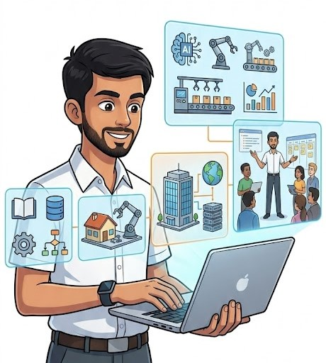
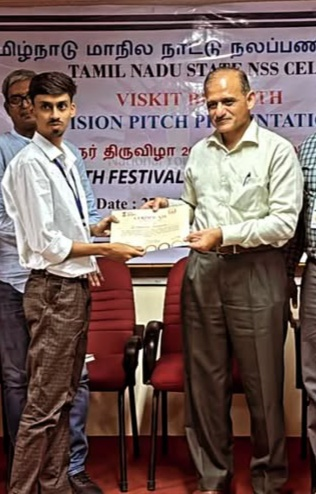

ABOUT ME
Mohamed Asmathulla G
Developer · AI Enthusiast · Backend Engineer · Researcher · Builder
I am Mohamed Asmathulla G, a Computer Science and Engineering developer from Karur, India, passionate about building practical software solutions and exploring emerging technologies.
My journey has grown from learning programming and developing academic projects into working with Artificial Intelligence, backend engineering, full-stack development, Android applications, data analytics, robotics, automation, DevOps, and technical research.
I enjoy understanding technology from an end-to-end perspective — from identifying a problem and designing a solution to writing code, integrating APIs and databases, testing applications, deploying systems, and continuously improving them.
My Journey
2022 — WHERE IT STARTED
My interest in technology began during my school years, when I started becoming curious about computers, programming, and problem solving.
I completed my Secondary School Certificate (SSLC) at Sacred Heart Higher Secondary School in 2022.
Although I was still at the beginning of my technical journey, this period helped build the curiosity that eventually led me toward Computer Science and software development.
2023 — ENTERING COMPUTER SCIENCE
I completed my Higher Secondary Certificate (HSC) at Sacred Heart Higher Secondary School in 2023 and began my undergraduate journey in Computer Science and Engineering at Chettinad College of Engineering and Technology, Karur.
College became the stage where my interest in technology moved from curiosity into practical development.
I started exploring programming languages, databases, web technologies, algorithms, and software development concepts. Instead of focusing on only one technology, I wanted to understand how different technologies could be combined to create useful applications.
2024 — BUILDING & EXPERIMENTING
During this stage of my engineering journey, I started building more practical projects and experimenting with different areas of development.
I worked with technologies such as Python, C, C++, Java, HTML, CSS, JavaScript, SQL, PHP, R, and MongoDB, while developing applications involving web development, databases, automation, data processing, and software engineering.
One of my notable projects was CustomShop Bill Master, a web-based billing system designed for retail businesses with product management and invoice generation. The project received the Dr. A.P.J. Abdul Kalam Award 2024 and secured 3rd Prize at TechnoBattle 2.0.
This period changed the way I looked at development. I began understanding that programming is not simply about writing code — it is about using technology to solve real problems.
2025 — ENTERING PROFESSIONAL DEVELOPMENT
2025 became an important turning point in my career as I moved deeper into professional software development.
I started working with InGen Dynamics as a Python AI & Automation Developer OJT Trainee, where I worked on Python applications, AI-based automation, machine learning, deep learning, and real-time application development.
At the same time, I joined Brillaris Global Pro as a Backend Developer, gaining practical experience in backend services, REST APIs, authentication, database integration, API testing, debugging, frontend-backend communication, and application deployment.
My professional work also introduced me to robotics and real-time systems. I worked with technologies such as ROS, ROSLIB, Catkin, React, Redux, Axios, and MUI, contributing to projects involving robot monitoring, control, communication, and real-time ROS data.
I also expanded my development experience into mobile applications and began working toward Android development, giving me exposure to another layer of the software ecosystem.
During this period, I worked on real-world projects such as Control Centre, Companion App, Catkins, SmartSportz, and Liyans Vastra, each giving me experience with different aspects of software engineering.
Beyond technical work, I also took on leadership responsibilities as Leo Club President, IEI President, and CSE Department Vice President, strengthening my communication, teamwork, coordination, and leadership abilities.
2026 — EXPANDING ACROSS TECHNOLOGY
In 2026, my focus expanded further across software development, data analytics, mobile applications, research, and professional engineering.
I continued my work as an Android Developer OJT Trainee at InGen Dynamics, developing applications that communicate with backend services and APIs.
I also completed an IBM Cognos Analytics internship, where I worked with datasets, reports, dashboards, data visualization, and analytical insights. This experience strengthened my understanding of the relationship between software, data, and decision-making.
At the same time, I continued my backend development work at Brillaris Global Pro and worked on real-world application development involving APIs, databases, integrations, debugging, and deployment.
My interests also continued expanding into Generative AI, RAG, intelligent automation, advanced backend systems, DevOps, and real-time applications.
From Student to Professional Developer
My journey has gradually moved through several stages:
- Learning Understanding programming fundamentals, computer science concepts, databases, algorithms, and software development.
- Building Turning what I learned into academic, personal, and practical projects.
- Working Applying those skills to real-world company projects and production-oriented applications.
- Exploring Moving beyond conventional development into AI, robotics, automation, data science, DevOps, and research.
- Leading Taking responsibility through leadership positions and learning how to work with teams, manage activities, communicate effectively, and deliver results.
This combination has shaped the way I approach technology today.

My Areas of Expertise
Artificial Intelligence
I work with Python-based AI development, machine learning, deep learning, AI automation, data processing, and RAG concepts, with an interest in developing intelligent applications that solve practical problems.
Backend Engineering
I build backend services using technologies such as Python and Node.js, with experience in REST APIs, authentication, databases, application logic, API testing, debugging, and frontend-backend integration.
Full-Stack Development
My development experience extends from frontend interfaces to backend systems and databases. I have worked with React, JavaScript, HTML, CSS, APIs, databases, and deployment technologies.
Mobile Development
I have experience with Android, Kotlin, Flutter, and Dart, including integrating mobile applications with backend services and APIs.
Robotics & Real-Time Systems
My professional experience includes working with ROS, ROSLIB, Catkin, and real-time robotic applications, including robot monitoring, control, communication, and real-time data.
DevOps & Infrastructure
I have worked with Git, GitHub, GitLab, Docker, Kubernetes, CI/CD, NGINX, Grafana, reverse proxies, deployment environments, and related infrastructure technologies.
Research & Publications
Research is another important part of my journey.
I am interested in exploring how emerging technologies can be applied to practical problems, particularly in Artificial Intelligence, Deep Learning, Real-Time Applications, Data Science, IoT, Robotics, and Intelligent Automation.
I have contributed to 11+ publications and research works, covering areas including deep learning, IoT-based health monitoring, and data analysis.
My research experience encourages me to look beyond simply implementing existing technologies and understand the concepts, possibilities, limitations, and real-world applications behind them.
Leadership Beyond Code
My college journey has also given me opportunities to develop leadership skills alongside technical abilities.
As Leo Club President, I took responsibility for coordinating activities, working with teams, communicating with members, and managing responsibilities.
As IEI President, I gained additional experience in organizing and coordinating technical and academic activities.
As Vice President of the CSE Department, I have continued developing my ability to communicate, collaborate, coordinate, and take responsibility.
These experiences taught me that technical knowledge alone is not enough. A successful professional also needs communication, teamwork, accountability, decision-making, and leadership.
Recognition
My academic and extracurricular journey has been recognized through several achievements.
Dr. A.P.J. Abdul Kalam Award — 2024
Recognized by the World Youth Federation for academic excellence and leadership contribution.
3rd Prize — TechnoBattle 2.0
Recognized for innovative technical project development at the college-level project expo.
LEO President Medal
Received in recognition of leadership and service as Leo Club President.
These achievements represent important milestones in my journey and motivate me to continue improving.
How I Approach Development
I believe good software development starts before writing the first line of code.
I first try to understand the problem, identify the requirements, think about the architecture, select appropriate technologies, and then move into implementation.
I try to think about the entire system rather than only the individual feature I am implementing.
This mindset has become particularly important through my experience with backend systems, real-time applications, robotics, mobile applications, and production-oriented projects.

What I Am Exploring Now
At this stage of my journey, I am continuously expanding my knowledge across Generative AI, Retrieval-Augmented Generation, advanced backend architecture, machine learning, deep learning, AI automation, data science, cloud and DevOps, Kubernetes, real-time systems, robotics, system design, and project management.
I am particularly interested in understanding how these technologies can work together to create intelligent, scalable, reliable, and production-ready applications. Rather than learning technologies individually, I want to understand how they connect as complete systems and how they can be applied to solve meaningful real-world problems.
My Development Philosophy
LEARN. BUILD. RESEARCH. LEAD.
Learn
Technology is constantly changing, so continuous learning is essential.
Build
The best way I understand technology is by turning concepts into working applications.
Research
Research helps me explore ideas deeply and understand what is possible beyond existing implementations.
Lead
Leadership teaches me how to communicate, collaborate, take responsibility, and help others move toward a common goal.
These four principles continue to shape my professional journey.
Beyond Technology
I don't want to define myself only by the programming languages I know.
Technologies will change throughout my career, but the ability to learn, solve problems, communicate, adapt, and build will always remain important.
My goal is to combine technical knowledge with product thinking, research, leadership, and real-world problem solving.
I want to become someone who can understand a problem from multiple perspectives and contribute to the complete journey from idea to working product.
Where I Am Heading
My long-term vision is to grow at the intersection of Software Engineering, Artificial Intelligence, Data, Robotics, Research, and Product Development.
I want to build technology that is not only technically impressive, but also useful, reliable, scalable, and intelligent.
Every project gives me a new problem to solve.
Every problem gives me something new to learn.
Every experience gives me another perspective.
And every new perspective moves me one step forward.